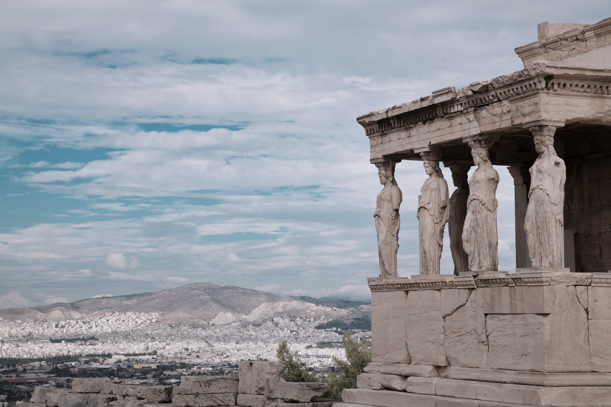
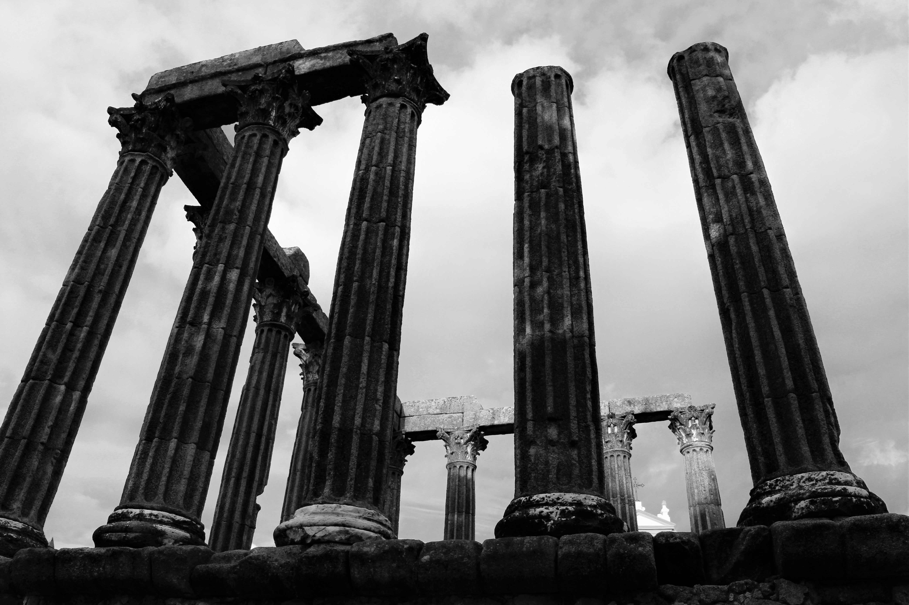

COMPAÑÍA:
Historia de la Empresa
1990

El nombre original del Coliseo era Amphitheatrum Flavium (Anfiteatro Flavio), y se le dio por haber sido construido en el reinado de los emperadores de la dinastía Flavia, después del reinado del emperador Nerón. Curiosamente, este nombre no era exclusivo del Coliseo, ya que Vespasiano9 y Tito, constructores del Coliseo, también edificaron un anfiteatro que lleva el mismo nombre en el municipio de Puteoli
1995

Durante casi 30 siglos, desde su unificación alrededor del 3100 a. C. hasta su conquista por Alejandro Magno en 332 a. C.: el antiguo Egipto fue la civilización preeminente en el mundo mediterráneo.
2000
Los primeros habitantes de Hawaii viajaron desde la Polinesia hace aproximadamente mil años cargando consigo sus convicciones religiosas y espirituales. Los distintos dioses de Hawaii y de la Polinesia fueron representados por tikis. El nombre tiki se refiere a distintos tipos de imágenes usadas en toda la Polinesia
2010
Los primeros habitantes de Hawaii viajaron desde la Polinesia hace aproximadamente mil años cargando consigo sus convicciones religiosas y espirituales. Los distintos dioses de Hawaii y de la Polinesia fueron representados por tikis. El nombre tiki se refiere a distintos tipos de imágenes usadas en toda la Polinesia
Historia de una Visión
Ciclo 2
Frigorífico Larrauri - Despostado
"Después de realizar varios análisis de mercado y evaluar los resultados de nuestra producción, nos complace anunciar el comienzo de nuestro ciclo 2. Esta nueva etapa representa una oportunidad emocionante para seguir creciendo como empresa y continuar brindando soluciones innovadoras a nuestros clientes. En este ciclo, nos enfocaremos en mejorar aún más la calidad de nuestra carne, expandir nuestro alcance a nuevos mercados y fortalecer nuestras relaciones con los clientes existentes. Estamos emocionados de embarcarnos en este nuevo capítulo y esperamos alcanzar nuevas alturas juntos."
Visita nuestros productos